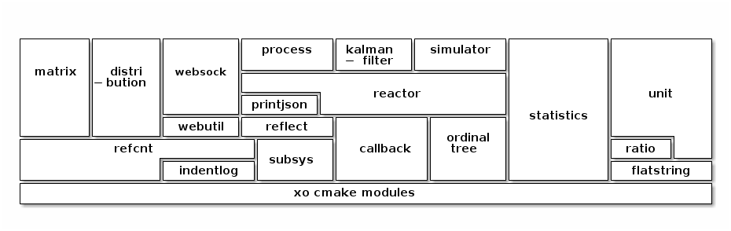

xo libraries
Table of Contents
1. Xo
A set of integrated libraries for event-based simulation with stochastic processes. Intended for use in C++ and python applications.
Variety of features covered, for example: kalman filters, stochastic processes, complex event processing, simulation, websockets.
2. Python Libraries
xo-pywebsock in-memory http server; can expose entirely-native publishing pipeline via websockets. xo-pywebutil lo-level abstractions for http: endpoints, attribute lists. xo-pykalmanfilter linear kalman filter with simulation support. xo-pydistribution probability distributions e.g. Kolmogorov Smirnov xo-pyprocess stochastic processes with simulation focus. xo-pyreactor complex event processors + polling reactor. xo-pyprintjson plugin json printing for xo c++ classes. xo-pyreflect plugin introspection for xo c++ classes.
3. C++ Libraries
http xo-websock in-memory http server with websocket and python support. xo-webutil low-level abstractions for http: endpoints, attribute lists.
stochastic processes + friends xo-kalmanfilter linear kalman filter with simulation support. xo-process stochastic processes and simulation-compatible realizations. xo-distribution probability distributions including Kolmogorov-Smirnov xo-statistics header-only. online accumulators, histogram. xo-randomgen header-only. fast pseudo random number generators. xoshiro**,
complex event processing xo-simulator deterministic event-based simulation xo-reactor api for complex event processors + simple polling implementation.
data structures xo-ordinaltree header-only. fast in-memory B+ tree, red-black tree w/ ordinal statistics.
general-purpose xo-callback header-only. reentrant callback set xo-printjson json printer with plugin support. xo-reflect reflection/introspection library xo-subsys orderly startup and shutdown for subsystems with plugin features xo-refcnt intrusive reference counting xo-indentlog header-only logging library; colorized output with indentation tracking program call structure
build tools xo-cmake cmake modules.
4. External Dependencies
| name | deps |
|---|---|
| all | gcc, lcov, catch2, cmake |
| all py | pybind11 |
| xo-kalmanfilter | eigen |
| xo-websock | libwebsockets |
5. Python Abstracion Tower
Each python library pyfoo depends on similarly-named c++ library foo.

6. C++ Abstraction Tower
